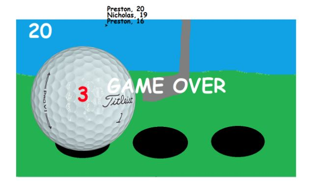
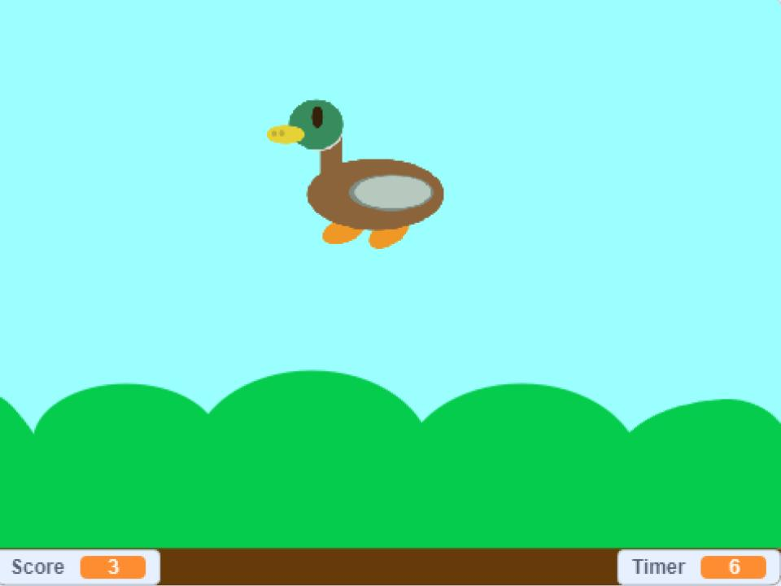
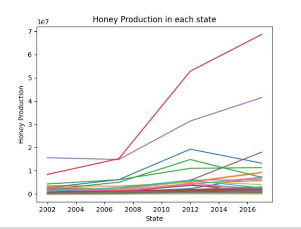
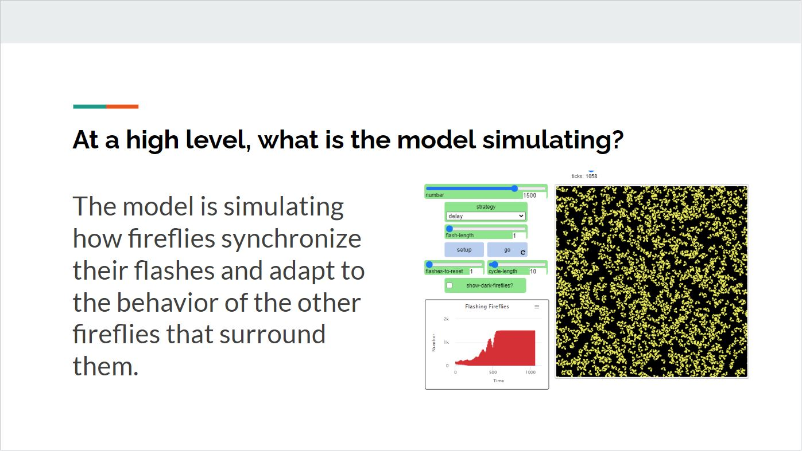

Home
Portfolio
About Me
This is my Portfolio Page!
1.1.9 Turtle Run

This game is called Turtle Run. It is similar to Minion Rush as a player must maneuver their turtle away from other turtles or they will collide.
1.2.5 Golf Drop

This game is called Golf Drop. A random number will be generated and the player must go to that corresponding golf hole and drop the golf ball to score a point.
Scratch Project: Click the Birds

This game is called Click the Birds. A bird will pup up in random places and you must click it a certain amount of times withing a given time span. If you don't, you fail. However, if you do, you move on to the next level with more clicks needed in that time span.
3.2.4 Honey Analysis

This project was a data analysis of a spreadsheet of honey production. We had to make visuals and organize data for this project.
4.1.4 Fireflies Analysis

This project was a data analysis of artificial intelligence used to resemble the behaviors of fireflies and how their light cycles adapt to their fellow fireflies.
Use data files to create graphs.
Using netlogo do remix of illusions.
Interactive Fiction Rags to Riches.